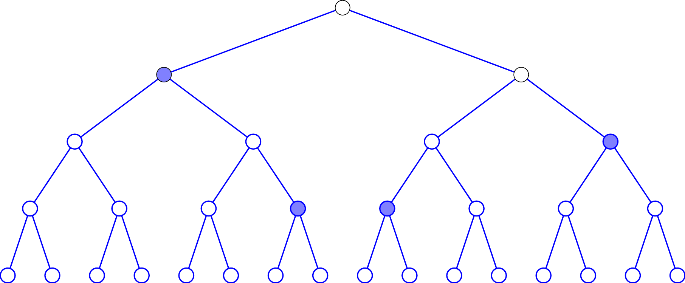

1 Meta-Learners
Künzel et al. (2019) offers a summary of S-Learners, T-Learners and introduces X-Learners. Each of these methods offers a methodology of increasing complexity to estimate heterogeneous treatment effects using any type of base learner.
In this case a base learner is the machine learning used to in the metalearning framework. This is commonly a tree-based method such as Random Forest. As discussed in figure, the base-learner itself is not adapted to a causal context. Instead, the way the models are implemented together will explore causality.
Note than in each of these metalearners the outcome variable can be binary or continuous. In a binary case, the base-learner will be any learner cabable of classification. In a contineous case, the base-learner will be any learner capable of regression.
1.1 What is a Base-learner?
1.2 S-Learners
Single learners or S-Learner uses a single base learner, \(M_s\), where the treatment indicator is given no special status in the model. Simply, the model is a base-learner with a dependant variable where the treatment indicator is incorporated alongside other covariates without being given any unique status or special treatment within the model structure.
The single base-learner will model the feature space and how the covariates (including the treatment) predict the outcome. Recall from ?@eq-unknownite that the ITE is the difference between the two potential outcomes. The inference of causality in the S-learner is that we use the predictive power of machine learning to predict each of the potential outcomes. The predicted CATE for an individual unit is then the difference between the predicted outcomes when the treatment assignment indicator is changed from control to treatment.
Intuition of S-Learners
The intuition of how meta-learners work is best expressed visually using a simple CART model as in ?@fig-s_learner_process because we can interpret the splits. When predicting outcomes from covariates and treatment, the tree algorithm splits the data to form more homogeneous nodes, making the nodes purer than before the split. In doing so, CART may split on the treatment indicator at various points within the tree. Treatment effect heterogeneity is captured by splitting the homogeneous nodes on the treatment indicator, resulting in different treatment effects across the resulting nodes. Essentially, the tree structure illustrates how the treatment effect varies by considering the treatment variable across different homogeneous groups, thereby highlighting the heterogeneity in the treatment effect across the population. When making predictions from the tree for each potential outcome, the location of the splits explains the heterogeneity of the effect.
Assuming a binary treatment, the individual treatment effect can be predicted as:
\[ \hat{\delta_i} = y^{pred}_i(1) - y^{pred}_i(0) \tag{1}\]
A notable property of the S-Learner is that the base-learner may not consider the treatment effect for each individual. This can occur becuase the CATE may be zero for some individuals or because the treatment indicator may be quite weak. An indicator may be weak because the effect is small or noisy. In ?@fig-s_learner_process, then means that the tree does not split on the treatment indicator. When assessing each split, at no point does splitting on the treatment result in the most purity in a node.
Given that there indicator may not be considered, it makes sense that the estimate of the treatment effect would be biased twoards zero. Künzel et al. (2019) perform simulations and show that the S-Learner tends to bias the treatment towards zero as expected.
Another notable property is that S-Learners will model the response surface of the treatment and control groups together as we only have a single base-learner. This means that the base-learner models the data as if the treatment and control groups share a similar response surface. This means the functional form that maps features to outcomes is similar across both groups. Conceptually, the base-learner leverages information from both groups and develops a composite response surface. In other words, the structure of the treatment group tells us about the structure of the control group, vise-versa. Of course, this will not always be the case - perhaps the relationship between variables in the control group are additive and suggesting a linear model is appropriate but the treatment group has multiplicative relationships and complex functional forms.
The above property can be beneficial or harmful depending on context. If prior domain knowledge suggests that the CATE may be zero in many observations, then the S-Learner may be a good candidate during model selection. Also, when we know that there is a similar response surface between groups then we can take advantage of this with a single base-learner using an S-Learner. Alternatively, there may prior knowledge suggests that there is a widely experienced treatment effect or we know that there are structural differences between each group, then the S-Learner is counter-intuitive and other models will likely perform better.
For illustrative purposes, consider the NSW jobs programme. Further information about this dataset can be found in ?@sec-data_nsw_jobs. For conceptual understanding, a simple CART model is excellent however more complex models provide superior performance. One such model is a Random Forest which is implemented below using K-fold cross validation and a grid search procedure for mtry. I do not discuss these methods in depth beyond their implementation but there are good sources to learn about them for unfamiliar readers.
I use a test-train split as it is of interest to see how well the model predicts the change in income. Note that we cannot see how well the model predicts the resulting ITE’s because there is no observable ITE. A purely theoretical comfort is that if a model predicts the known outcome well and the treatment and control group have similar response surfaces, then the ITE’s should be robust.
1library(caret)
library(randomForest)
2slearner_model_control <- trainControl(method = "cv", number=10)
Grid_rf <- expand.grid(mtry = c(3,4,5,6))
slearner_rf <- train(re78~
treat + age + educ +
black + hisp + marr + nodegree,
data = nsw_data,
method = "rf",
trControl = slearner_model_control,
tuneGrid = rfGrid,
3 verbose=FALSE)
y_hat1 <- predict(slearner_rf,
4 newdata=within(nsw_data,treat <- 1))
y_hat0 <- predict(slearner_rf,
newdata=within(nsw_data,treat <- 0))
5slearner_ite_nsw <- y_hat1 - y_hat0- 1
-
Install the
caretandrandomForestpackages inR. - 2
-
Define the model control and hyperparameter tuning grid. Here the model control is K-fold cross validation with 10 folds and values 4 different values of
mtryare considered. - 3
-
The Random Forest model is trained and a grid search is performed for values of
mtry. Thetrainfunction is from thecaretpackage and implements a grid search procedure and cross-validation. - 4
-
Predictions of potential outcomes are made holding the treatment equal to \(1\) and \(0\). The
within()function allows the specification of values for thenewdata. - 5
- The ITE is the contrast of the predicted potential outcomes as in Equation 1.
Discuss further: - what to do with ITE, follow ups - what base to use - an example of s learner implementation in published research - confounding effects.
1.3 T-Learners
It would seem that the S-Learner is inadequate in many applications which the T-Learner aims to resolve. In the T-Learner there are two base learners - hence the T-Learner- each fit on treatment and control observations resulting in \(M_1\) and \(M_0\) respectively. The dependant variable remains the same in both. This results in two models that seperately models the outcome for each of the treatment and control cases separately. T-learners aim to answer the fundamental problem by using two separate base-learners associated with treatment and control to predict potential outcomes.
\[ \begin{aligned} M_0 &= E[Y(0)|X=x,T=0]\\ M_1 &= E[Y(1)|X=x,T=1] \end{aligned} \tag{2}\]
Thus, predictions are then made from each base learner on the whole data resulting in counterfactual predictions. In other words, we run two models each with the same observed covariates and the tree strucuture of the treatment and control cases will predict counterfactual cases. In the T-learner the ITE is the contrast of the predicted outcomes under \(M_0\) and \(M_1\).
\[ \hat{\delta_i}=M_1(X_i)-M_0(X_i) \tag{3}\]
Intuition of T-Learners vs S-Learners
A T-learner equivalent to an S-learner that always splits perfectly on the treatment variable at the first decision. This split is guaranteed by using two separate models for the treatment and control observations. This allows the T-learner to bla..
Conceptually, the T-Learner has some opposing properties compared to the S-Learner. While the S-Learner assumes similar structures of the treatment and control groups, the T-Learner assumes different structures and models them separately.
Since the control and treatment groups may exhibit different data structures, we can use different base-learners tailored to each group’s characteristics. For example, a linear regression model may be suitable if the control group has linear and additive relationships, especially if interpretability is preferred. If the treatment group shows non-linear relationships, these can be captured using a machine learning model designed to handle these features.
The T-Learner not without fault. When we know there is commonly a zero treatment effect, the T-Learner will perform worse than an S-Learner because it will try to find an effect that is not there. Also, if there are commonalities in the groups, then the T-Learner is less efficient and generalise than the S-Learner as separate models cannot learn from eachother. These properties exist in theory and are corroborated by simulation result.
Although an additional drawback of using the T-Learner is that is can be subject to regularisation bias.
1.4 X-Learners
Finally the X-Learner uses the same first steps as the T-Learning to obtain \(M_1\) and \(M_0\). It imputes the treatment effects for the individuals in the treated group, based on the control-outcome estimator, and the treatment effects for the individuals in the control group, based on the treatment-outcome estimator. Mathematically, we calculate \(D_i(1) = Y_i^{obs}(1) - M_0(X_i(1))\) and \(D_i(0) = M_1(X_i(0)) - Y_i^{obs}(0)\). In this case, \(D_i(1)\) and \(D_i(0)\) are the imputed treatment effects for each observation. We then fit two secondary stage learner with the imputed treatment effects as the dependent variables to obtain estimates of \(\hat{\tau}_1(x)\) and \(\hat{\tau}_0(x)\) the for treatment and control respectively. Finally we use a propensity scores, \(e(x)\) and calculate the CATE as a weighted average of the two previous estimates \(\text{CATE} = e(x)\hat{\tau}_0(x) + (1 - e(x))\hat{\tau}_1(x)\).
1.5 R-Learners
1.6 Choice of Base-Learner
Künzel, Sören R., Jasjeet S. Sekhon, Peter J. Bickel, and Bin Yu. 2019. “Metalearners for estimating heterogeneous treatment effects using machine learning.” Proceedings of the National Academy of Sciences of the United States of America 116 (10): 4156–65. https://doi.org/10.1073/pnas.1804597116.